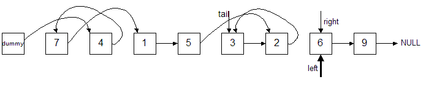
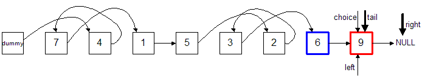
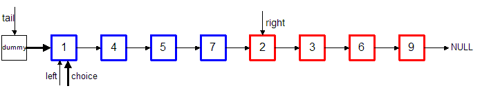
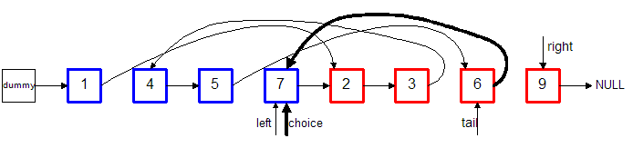

Merge Sort
This example uses a "dummy" node that points to the head. This can
simplify code because you never have
to worry about dealing with an empty list. The only "tricky" part is
that we are going to be sorting our list "in-place",
instead of creating a new list. This is why a merge sort is much more
efficient on a linked list than on an array. When
you insert into an array, you have to "shift" all of the elements over.
There is never any shifting in a linked list;
all that needs to be done during insert is to modify a few pointers.
Also, this example uses a single-linked list, but you can easily extend
it to work on a double-linked list with a dummy node
at the end.
Instead of thinking of the list below as one list of 8 items, we can
think of it as 8 lists of one item each.
By definition, a list containing only one item is sorted. So, we can
start the merge process by
merging adjacent 1-item (sorted) lists together into 2-item (sorted)
lists. The next step is then
to merge the adjacent 2-item lists into 4-item lists. Then, merge the
4-item lists into 8-item lists.
The process continues until there is only one (big) list.
- Start out by initializing a left and right pointer to the first
item. The left pointer keeps track of
the items in the left sorted list and the right pointer keeps track of
the items in the right sorted list.
Since we're starting with lists of length 1, move the right pointer so
that it skips over 1 item. It now
marks the beginning of the right list. The left and right lists each
contain one item.
- Now, start the merge operation. Merging is simply done by
selecting the smaller value between the item
pointed at by left and the item pointed at by right. In this example,
the item in the right list is
smaller, so this one is chosen. Since this is the first pass, set the
head (dummy->next) to point
to this item.
- Then, update the tail to point to this newly added node and
increment the right pointer (since we've just
added the number 4). The right pointer is now pointing after the last
item in its list, so the right list is effectively
empty now.
- Continuing the merge operation, choose the smaller value
between from the left and right lists. Since the right
list is empty, we must choose the item pointed at by the left pointer.
We add this item to the end of the list by
pointing the tail's next pointer at the node. (tail->next =
choice)
- Then, update the tail to point to this newly added node and
increment the left pointer (since we've just
added the number 7). The left pointer is now pointing after the last
item in its list, so the left list is effectively
empty now.
- Both lists are empty and the first merge pass is complete.
Notice that the right pointer is all set to begin
the next pass.
- Move the left pointer to point at the beginning of the next
list. (The right pointer is already there.)
- We are still working with lists of length 1, so move the
right pointer so that it skips over 1 item again. It now
marks the beginning of the right list. Again, the left and right lists
each contain one item.
- Again, we begin the merge operation by selecting the
smaller value between the item
pointed at by left and the item pointed at by right. At this point in
the example, the item in the left list is
smaller, so this one is chosen. Add it to the end of the list by setting
tail->next to point to this node.
- Again, update the tail to point to this newly added node
and increment the left pointer (since we've just
added the number 1). The left pointer is now pointing after the last
item in its list, so the left list is effectively
empty now.
- The left list is empty, so we choose the item in the right
list (5) and add it to the end of the list, again, by pointing
tail->next at the node.
- Update the tail pointer and increment the right pointer.
- Both lists are empty again.
- Move the left pointer to point where the right pointer is
pointing, setting up the next pass.
- Skip over 1 item with the right pointer to mark the
beginning of the right list.
- Choose the smaller value (2) and add it to the end of the
list.
- Update the tail pointer and increment the right pointer.
(The right list is empty.)
- Choose the item in the left list (3) and add it to the end
of the list.
- Update the tail pointer and increment the left pointer.
- Both lists are empty again.
- Move the left pointer to setup for the next pass.

- Skip over 1 item with the right pointer, marking the
beginning of the right list.
- Choose the smaller value (6) from the left list and add it
to the end of the list.
- Update the tail pointer and increment the left pointer.
(The left list is empty.)

- Choose the item from the right list (9) and add it to the
end of the list.
- Update the tail pointer and increment the right pointer.
The right pointer is pointing at NULL.

- Both lists are empty again. Since the right pointer is
NULL, there are no more items in the list and
all passes over lists of length 1 have been completed.
Notice that we didn't copy or move any data or nodes. We
simply modified pointers. This is
why merge sorting a linked list has a significant advantage over an
array.
- Redrawing the list to more easily see the progress:
- Grouping the sorted 2-item lists:
- Now, set up for a second pass through the list. This time, we
will merge sort 2-item lists into a 4-item list.
- Skip the right pointer over 2 items (since our sorted lists
are 2 items long.) This sets the right pointer
to the beginning of the right 2-item list.
- Choose the smaller value from the right list (1) and add it
to the end of the list. It's the first item
added this pass so set the head (dummy->next) to point at
it.
- Update the tail pointer to point to this item and increment
the right pointer.
- Choose the smaller value (4) and add it to the end of the
list.
- Update the tail pointer to point to this item and increment
the left pointer.
- Choose the smaller value (5) and add it to the end of the
list.
- Update the tail pointer and increment the right pointer.
(The right list is now empty.)
- Choose the only remaining item (7) and add it to the end of
the list.
- Update the tail and increment the left pointer.
- Both lists are now empty.
- Move the left pointer to start the next pass.
- Skip the right pointer over 2 items to mark the beginning
of the right list.
- Choose the smaller value (2) and add it to the end of the
list.
- Update the tail and increment the left pointer.
- Choose the smaller value (3) and add it to the list.
- Update the tail and increment the left pointer. (The left
list is now empty.)
- Choose the smaller value (6) and add it to the list.
Note: As an optimization step, once one of the lists becomes
empty, all of the items in the remaining
list can be added in one step. They are already in order and instead of
adding them one-at-a-time, as
is being shown in this example, you can simply stop and adjust the
pointers to reflect this fact.
- Update the tail and increment the right pointer.
- Choose the smaller value (9) and add it to the list.
- Update the tail and increment the right pointer.
- Both lists are now empty.
- Redrawing the list to more easily see the progress:
- Grouping the sorted 4-item lists:
- Now, set up for the third pass through the list. This time, we
will merge sort 4-item lists into an 8-item list. This will be
the last pass.
- Skip over 4 items with the right pointer, marking the
beginning of the right list.
- Choose the smaller value (1) and add this to the end of the
list.

- Update the tail pointer and increment the left pointer.
- Choose the smaller value (2) and add to the end of the
list.
- Update the tail pointer and increment the right pointer.

- Choose the smaller value (3) and add to the list.
- Update the tail pointer and increment the right pointer.
- Choose the smaller value (4) and add to the end of the
list.
- Update the tail pointer and increment the left pointer.
- Choose the smaller value (5) and add to the list.
- Update the tail pointer and increment the left pointer.
- Choose the smaller value (6) and add to the end of the
list.
- Update the tail pointer and increment the right pointer.
- Choose the smaller value (7) and add to the list.

- Update the tail pointer and increment the left pointer.
(The left list is now empty.)
- Choose the smaller value (9, since the left list is empty)
and add to the list.
- Update the tail pointer and increment the right pointer.
- Both lists are now empty. Since we only did one merge
during this pass, the sort is complete.
- Redrawing the list to more easily see the progress:
- Grouping the sorted 8-item list, we see that the algorithm
has completed.
Notes: (Of course, as they say, "The devil is in the details.")
- The list above was a power of 2, making it turn out perfect in that
the lengths of the lists on
both the left and right were always the same: 1, 2, 4.
- Most lists aren't going to be this symmetric, so you'll have to
keep track of the length
of the lists. (Maybe variables: lsize and rsize to
track the lengths.)
- Be careful when one of the lists is empty. (All of the
remaining items in the other list can simply
be added at once. This is an optimization that is not shown in the
diagrams, but is easy to add.)
- You need to keep track of how many merges are done during each
pass. When only one merge
occurs during a pass, it means that the entire list has been sorted.
- Start with a chunk size of 1, then double it after each pass
(e.g. 1, 2, 4, 8, 16, etc.). Something
like this after each pass:
chunksize *= 2;
- When merging two lists, you continue until both lists are
empty. Otherwise, you have these cases:
- The left list has items and the right list is empty. (Add remaining
left items to the list.)
- The right list has items and the left list is empty. (Add
remaining right items to the list.)
- Both lists have items and the smaller item is in the left
list. (Choose the left item.)
- Both lists have items and the smaller item is in the right
list. (Choose the right item.)
- This example showed how to sort the items from smallest to
largest. In general, you need to
use the sort criteria in the form of a callback function or
functor. This will allow
the client to specify how the items are to be sorted.
- This example used a dummy pointer. This made the code a
little simpler because you didn't
have to have the special case when the list was empty, as is the case
at the beginning of each pass.
With the dummy pointer, you always added the item to the end of the
list like this:
tail->next = choice
- Make sure that after you sort the list, the head_ and tail_
members point at
the correct nodes, as well as your dummy nodes.
- By following the algorithm via the diagrams, it's easy to see
why this algorithm is O(N lg N).
(You are making lg N passes over N items.)
- Make sure you can handle any size list (including empty lists),
and also lists that are already sorted. These are simple tests
you can run yourself.
- When you implement this, be sure to comment almost every line
of code in your algorithm so anyone (especially
yourself) reading it will understand why you're doing what you're
doing. It will certainly make
debugging your code much easier.